1913 Flood photographs in Niles Ohio

Trudy E. Bel
{kind=link}
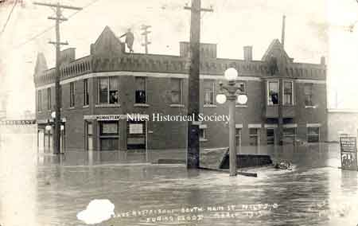
The Gilmore Restaurant and Manhattan Hotel on South Main Sreet and Water Street during the 1913 flood.
{kind=link}
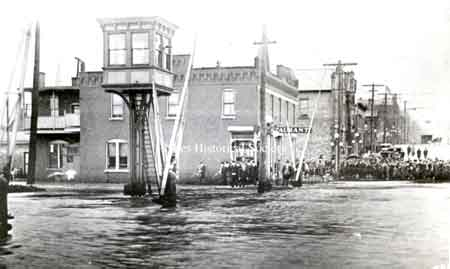
Looking North, the Gilmore Restaurant and Manhattan Hotel on South Main Sreet and Water Street during the 1913 flood.

Main Street looking south from Mill Street during flood, March 1913.
{kind=link}
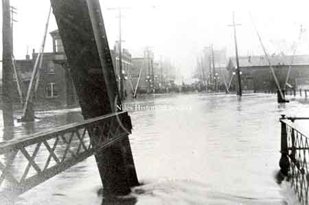
Looking north up Main Sreet from iron bridge with the Gilmore Restaurant and Manhattan Hotel on the left of the image.
{kind=link}
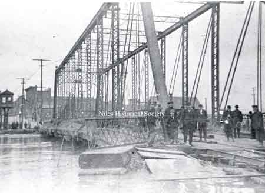
The South Main Street iron bridge was extensively damaged during the flood of 1913.
{kind=link}
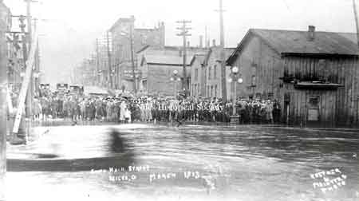
The tall building in right background is the Hartzell Building at Main and State Streets.

The Streetcar Waiting Station on Robbins Aveenue during the 1913 flood.

The Streetcar Waiting Station on Robbins Aveenue during the 1913 flood.

The frame Streetcar Waiting Station on Robbins Avenue, along Mosquito Creek on the north side of the street, just east of the overpass for the railroad. Note the streetcar barn in the background.

An Erie Train sneaking out of Niles, Ohio across the bridge with Church Street flooded.
{kind=link}
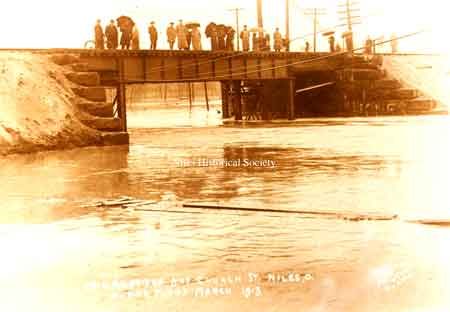
Erie railroad bridge at Church Street in Niles during the Flood of 1913 in March.
{kind=link}
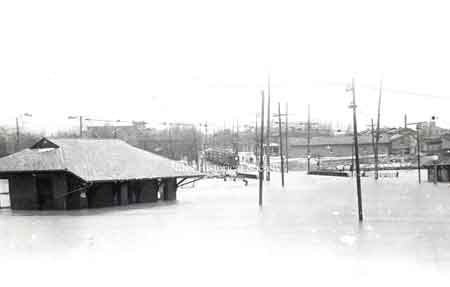
The street cars are marooned on Robbins Avenue during the 1913 Flood.
{kind=link}
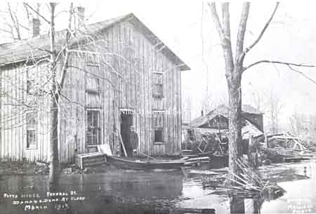
Damage to the Pitts house located on East Federal Street right by Mosquito Creek.

Mosquito Creek bridge over West Federal Street. At the height of the 1913 flood, the water was over the floor of the bridge.
{kind=link}
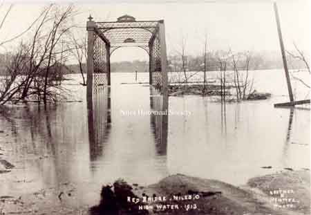
The "Red Bridge" or high iron bridge was located on West Park Avenue in Niles.
{kind=link}
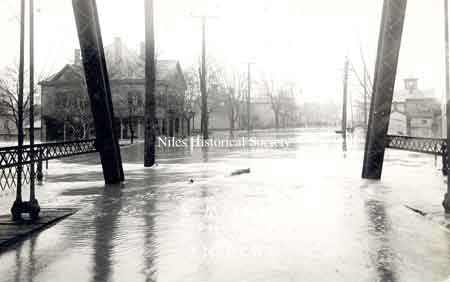
Postcard view of the 1913 flood that created havoc up and down the state. Taken from the Main Street bridge over the Mahoning River facing south. The building at the upper right is the Eagles Lodge building.

Looking northwest from South Main Street bridge. The steeple of St. Stephen's Church can be seen at the upper right of photo.

The Mahoning River in full spate from the south side of Niles looking north toward St. Stephen's Church and school.

A photo of a view from First Street looking across the river to the north.
{kind=link}
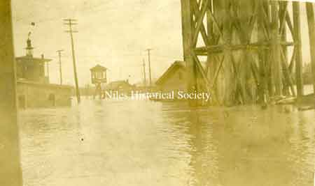
A photo of the South Main water tower, located on Water Street, on the right.

A photo of the Manhattan Hotel as seen from the northeast during the flood of 1913. Notice the rowing boat in the foreground.

Pennsylvania RR station after the flood has begun to recede.

A postcard photo of the 1913 flood as seen from the rooftops of Main Street looking south from town. The Southside Presbyterian Church is visible in the far right.

Empire Iron and Steel mill in the background. Railroad cars were placed on the county bridge at right to keep it from washing away.
{kind=link}
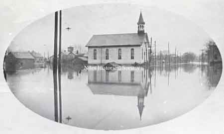
The Southside Presbyterian Church during the 1913 flood.
{kind=link}
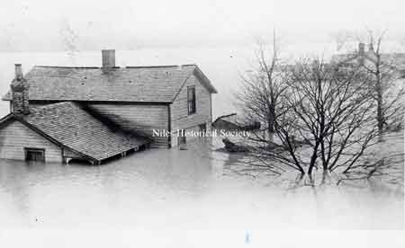
In the flood of 1913, this was one of the houses along the Mahoning River.
{kind=link}
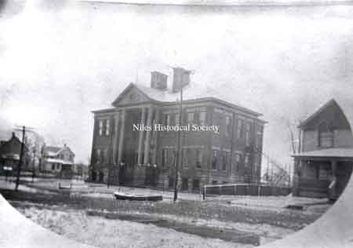
Third Street School, now Garfield School, with a rowboat floating in the street.

Russia Sheet Mill near the Mahoning River.

Niles Firebrick Factory in the 1913 flood.

Park Avenue Bridge over Mosquito Creek and rear of buildings on East State Sreet.

Homes in South side during the flood.

A general view of the 1913 flood.

The future location of the Niles Daily Times at the corner of West State and Arlington.
{kind=link}
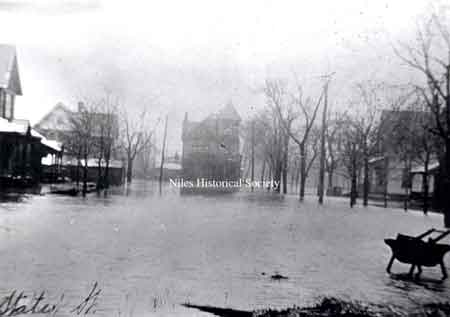
View of Furnace Street, later State Street, during 1913 Flood.

A postcard photo from the 1913 flood, showing Mill Street (now West State Street). The Flory Boarding House is located in the center rear at the corner of Chestnut and State.

Downtown area during the 1913 Flood.

View of the intersection of Water and Main Street showing the crowd in front of the Manhattan Hotel.
{kind=link}
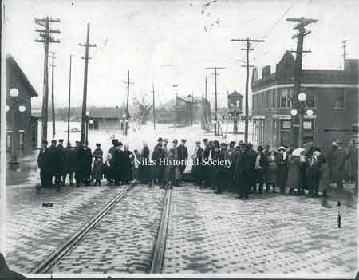
View from South Main Street looking across the Mahoning River with street car tracks and bricks in foreground.